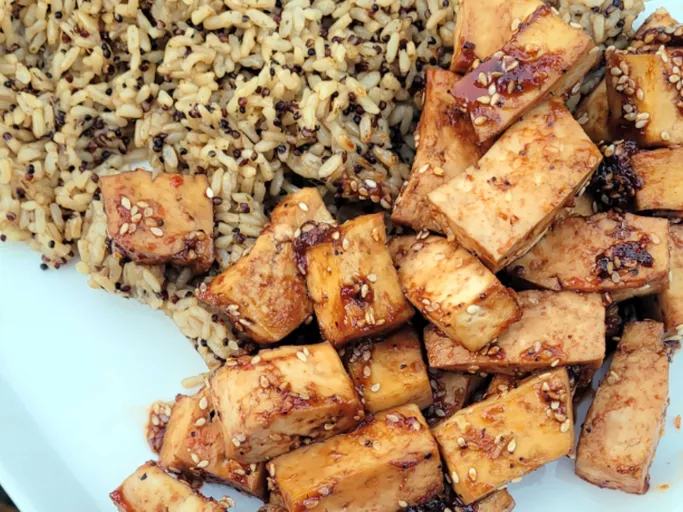

Baked Tofu Bites

Tofu cubes are marinated and then baked in the oven. The tofu can be used as a hot or cold snack or used as salad topping. Don't forget the smoke flavoring, it really adds the special flavor.
Ingredients
- 1 (16 ounce) package extra firm tofu
- ¼ cup soy sauce
- 2 tablespoons maple syrup
- 2 tablespoons ketchup
- 1 tablespoon vinegar
- 1 dash hot sauce
- 1 tablespoon sesame seeds
- ¼ teaspoon garlic powder
- ¼ teaspoon ground black pepper
- 1 teaspoon liquid smoke flavoring
Steps
- Preheat oven to 375 degrees F (190 degrees C). Lightly spray a non-stick baking sheet with oil.
- Slice tofu into 1/2-inch slices, and gently press excess water out of tofu. Cut sliced tofu into 1/2-inch cubes.
- In a bowl, stir together the soy sauce, maple syrup, ketchup, vinegar, and hot sauce. Stir in sesame seeds, garlic powder, black pepper, and liquid smoke. Gently stir tofu cubes into sauce. Cover, and marinate at least 5 minutes.
- Place the tofu on the baking sheet in a single layer. Bake in a preheated oven for 15 minutes. Turn tofu, and bake until the tofu turns golden brown, about 15 minutes more.
Home